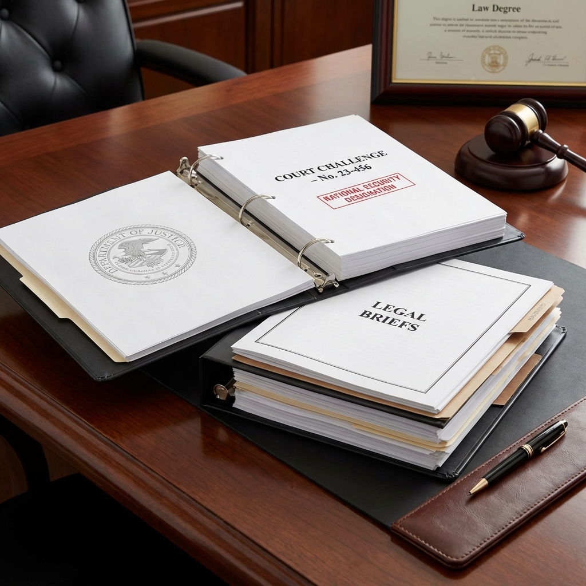

Anthropic received a letter on March 4, 2026, that no company wants to get: a formal designation from the Department of War identifying the AI safety startup as a "supply chain risk" to United States national security. The reason? Anthropic's refusal to remove safety guardrails from its Claude AI systems for military applications.
The designation isn't a ban, and it doesn't apply to civilian use of Claude. But it blocks Anthropic from contracting directly with the Department of War and potentially other defense agencies. For a company that has positioned itself as the responsible actor in AI development, the designation represents both a financial blow and a validation of its principles.
The Safety-Military Tension
The core conflict is straightforward: military applications of AI often require capabilities that safety-focused companies deliberately restrict. Autonomous weapons systems need AI that can make lethal decisions without human oversight. Surveillance systems need AI that can track individuals across vast datasets. These use cases conflict directly with Anthropic's stated commitment to developing AI that is "safe, beneficial, and aligned with human values."
When the Pentagon requested modifications to Claude that would enable autonomous weaponry applications, Anthropic declined. The Department of War's designation followed shortly after.
Anthropic's Legal Challenge

Anthropic isn't accepting the designation quietly. The company announced its intent to challenge the action in court, arguing that the designation lacks legal foundation and applies an overly broad interpretation of "supply chain risk." In a public statement, Anthropic characterized the designation as "not legally sound" and expressed confidence that judicial review would overturn it.
The legal strategy appears to focus on procedural grounds: whether the Department of War followed proper administrative process in making the designation, and whether Anthropic's civilian AI systems can reasonably be considered part of the defense supply chain. The case could establish important precedents for how AI companies are regulated under national security frameworks.
The Competitive Context
The designation arrives at a pivotal moment in Anthropic's growth. The company recently reached a $380 billion valuation, announced a $100 million investment in its Claude Partner Network, and launched the Anthropic Institute to research societal AI challenges. Being locked out of defense contracts—even a portion of the federal market—represents a meaningful revenue limitation.
But there's a counter-narrative: Anthropic's principled stance may strengthen its position with commercial customers who value responsible AI development. In an era where AI safety is increasingly a board-level concern, being the company that refused to build autonomous weapons could be a competitive advantage in civilian markets.
What This Means for AI Policy
The Anthropic case highlights the unresolved tension between AI safety and national security. The US government wants AI capabilities that can maintain military advantage; AI safety advocates want restrictions that prevent the most dangerous applications. When these priorities conflict, there's no clear framework for resolution.
The White House's National Policy Framework for AI, released earlier this month, emphasizes both innovation and safety—but doesn't resolve the specific question of how to handle companies that prioritize safety over military utility. Anthropic's situation may force that conversation into the open.
The Broader Implications
If the Department of War's designation stands, it creates a precedent: AI companies that refuse defense work on safety grounds can be labeled national security risks. That incentive structure pushes the industry toward military cooperation, potentially accelerating the development of AI systems designed for combat applications.
Anthropic is betting that legal challenge and public support can reverse the designation. The company has framed the issue not as a business dispute but as a principle: AI safety shouldn't be punished as a security risk. Whether courts—and the public—agree remains to be seen.
The stakes extend beyond one company. The outcome will shape whether AI safety and military applications can coexist, or whether the industry must choose sides.